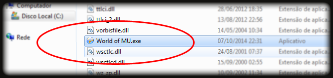
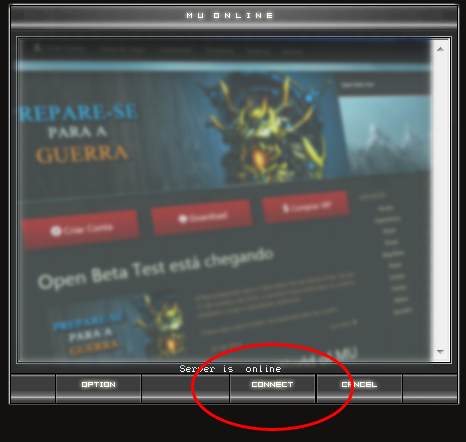

Faça o download a partir de um dos links abaixo.
Os arquivos a seguir são menores que os principais pois não possuem os arquivos de som e musicas do jogo.
Recomendável para usuários com internet mais lenta.
Clique em um dos links acima para fazer o download do World of MU!
É necessário descompactar o arquivo em alguma pasta do seu computador para poder jogar. Para isso, é necessário possuir o winRAR ou outro descompactador de arquivos. Se não possuir um, clique aqui para fazer o download.
Para abrir o jogo, navegue até a pasta onde descompactou o arquivo e execute World of MU.exe com o ícone de um globo azul, conforme visto na imagem abaixo.
Para jogar clique em CONNECT no launcher de World of MU.
Se mesmo após seguir estes passos você não conseguir ou tiver alguma falha, pode entrar em contato com o nosso suporte clicando aqui.
| Componente | Requerimento |
|---|---|
| Sistema Operacional | Windows® Vista / Windows® 7 / Windows® 8 / Windows® 8.1 |
| Processador | Pentium 4 – 2.0 Ghz |
| Memória RAM | 1 GB |
| Placa de vídeo | processador gráfico 3D |
| Espaço em disco | 700 MB de espaço livre no disco |
| Conexão internet | Banda larga * |